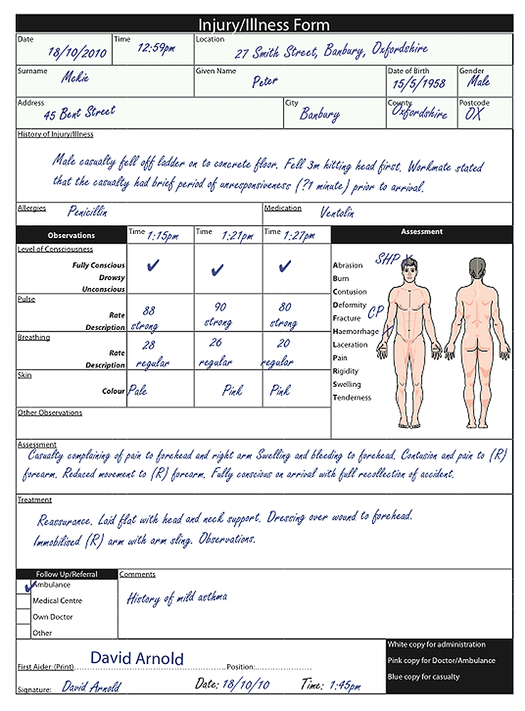

Legal issues in First Aid
Legal issues in First Aid
The information in this chapter is a guide only. It is provided to help first aiders understand the potential legal consequences of becoming involved in an incident. You should seek your own independent legal advice if you have any specific questions about legal issues associated with first aid procedures or become involved in legal action.
There are four main legal considerations relating to first aid:
 Duty of Care
Duty of Care
 Negligence
Negligence
 Consent
Consent
 Recording
Recording
Duty of care
"Duty of care" describes the legal duty owed by one person to another to act in a certain way. As a first aider, you have a duty of care towards your casualties to exercise reasonable care and skill in providing first aid treatment. The duty arises because you have knowledge and skills relevant to a medical emergency situation.
If you choose to provide first aid assistance, you have a duty to use your knowledge and skills in a responsible way.
The common law does not impose an automatic duty on first aiders to go to the aid of every casualty they come across. However, first aiders do have a duty to provide first aid assistance if they have voluntarily taken on that role. For example, a nominated first aid officer in a workplace owes a duty of care to assist another person in that workplace.
Legislation can also impose a duty of care. For instance, legislation in some States says that staff in child care centres must provide medical aid to a child who becomes ill or is injured. Further, in the Northern Territory, the Criminal Code makes it a criminal offence, for a person who is able to do so, to 'callously fail' to provide first aid to a person urgently in need and whose life may be endangered. The penalty is up to seven years imprisonment.
Once you start first aid treatment of a casualty you do take on a duty of care to provide first aid with reasonable skill and care and ensure your actions do not increase the risk to the casualty. You should continue to provide first aid once this treatment has begun, until:
 The scene becomes unsafe
The scene becomes unsafe
 Another trained first aider arrives and takes over
Another trained first aider arrives and takes over
 Qualified help arrives and takes over
Qualified help arrives and takes over
 The casualty shows signs of recovery
The casualty shows signs of recovery
 You become physically unable to continue
You become physically unable to continue
Various Australian States and Territories (excluding Queensland and Tasmania) exclude from liability a person where, in an emergency, they help a person who is, or risks being, injured. Such protection from civil liability for an act or omission exists as long as:
 The person rendering assistance does so in good faith (that is, acting honestly, without fraud, collusion, or participation in any wrongdoing);
The person rendering assistance does so in good faith (that is, acting honestly, without fraud, collusion, or participation in any wrongdoing);
 The person's action was without expectation of reward or payment;
The person's action was without expectation of reward or payment;
 The person was not responsible for the injury in relation to which the assistance was provided;
The person was not responsible for the injury in relation to which the assistance was provided;
 The person's capacity to exercise reasonable care and skill was not significantly impaired by being under the influence of alcohol or drugs;
The person's capacity to exercise reasonable care and skill was not significantly impaired by being under the influence of alcohol or drugs;
 The person exercises reasonable care and skill; and
The person exercises reasonable care and skill; and
 The person does not impersonate a health care or emergency services worker or a police officer or otherwise falsely represents that he or she has skills or expertise in connection with the rendering of emergency assistance.
The person does not impersonate a health care or emergency services worker or a police officer or otherwise falsely represents that he or she has skills or expertise in connection with the rendering of emergency assistance.
In addition, each Australian jurisdiction has legislation which provides protection for volunteers of charitable, religious, educational and benevolent community organisations. Such volunteers are protected from civil liability for acts or omissions made or done in good faith within the scope of the activities organised by the community organisation.
The protection does not extend to damage caused by the volunteer's criminal conduct or impairment of the volunteer's ability by alcohol or drugs.
Negligence
In the unlikely event that a first aider is sued in connection with providing first aid assistance, the courts would look at the circumstances surrounding the event to see if the first aider acted negligently in the way the first aid was provided. The following factors must all be present for a first aider to be found negligent:
1. A duty of care existed between the first aider and the casualty;
2. The first aider did not exercise reasonable care and skill in providing the first aid;
3. Breached the relevant standard of care; and
4. The casualty sustained damage as a result of an act or omission of the first aider.
A first aider is not considered a 'professional' in most cases. A court would look at the first aider's training and at what a prudent and reasonable person would have done with the same level of training in the same circumstances.
Because encouraging people to assist others is in the public interest, it is likely that the Australian courts would only see first aiders as liable if it can be shown that their behaviour was grossly negligent and would take account of all the circumstances of the event.
The court may examine issues to establish whether the first aider exercised reasonable care, such as:
 What was the first aider’s level of knowledge?
What was the first aider’s level of knowledge?
 Did the first aider perform within their skill levels?
Did the first aider perform within their skill levels?
 What information was available for the first aider, including:
What information was available for the first aider, including:
 Was adequate questioning used?
Was adequate questioning used?
 Was a thorough examination of the casualty undertaken?
Was a thorough examination of the casualty undertaken?
 Were all the facts available taken into account?
Were all the facts available taken into account?
 Were accepted first aid procedures complied with?
Were accepted first aid procedures complied with?
 What were the circumstances in which the first aider provided assistance?
What were the circumstances in which the first aider provided assistance?
Example:
A first aider gives CPR to a casualty in cardiac arrest. During this CPR a rib is broken. The resuscitation is successful and after the event the casualty decides to sue for the rib injury.
The court would look at the facts and may decide that:
 It is reasonable to expect that a first aider might break a casualty's rib while delivering CPR to save the casualty's life; and
It is reasonable to expect that a first aider might break a casualty's rib while delivering CPR to save the casualty's life; and
 The first aider acted with reasonable care and skill; and
The first aider acted with reasonable care and skill; and
 The first aider was not negligent in providing CPR in this way; and
The first aider was not negligent in providing CPR in this way; and
 The outcome for the casualty of not performing CPR could have been far worse than suffering a broken rib.
The outcome for the casualty of not performing CPR could have been far worse than suffering a broken rib.
Consent
Before you start treating a casualty you should ask for and receive the casualty's consent to your treatment. If the casualty is unconscious, or is unable to give consent due to their injuries, you can assume consent and start treatment. If the casualty is under 18 years old, then you should seek consent from a parent or guardian. If a parent or guardian is not present, you can start treatment.
You should not start treatment if an adult, who seems of sound mind and able to make a decision, refuses your offer of treatment.
You only have the casualty's consent to treat them for a condition that affects their immediate health. You should not provide help for any ailment that goes beyond your knowledge of first aid.
Recording
First aiders should always make notes or fill out a casualty report on any event attended, no matter how minor. Proper records will help you to recall the incident if you are ever asked about it at a later stage.
The responsibility is greater if you have a role as a first aider in your workplace, and you may have reporting obligations under your State or Territory occupational health and safety (OHS) legislation. You can check this with your workplace OHS representative.
 Records may be used in a court, so ensure that your reports or notes are legible, accurate, factual, contain all relevant information, and are based on observations rather than opinions.
Records may be used in a court, so ensure that your reports or notes are legible, accurate, factual, contain all relevant information, and are based on observations rather than opinions.
When preparing a report some general guidelines should be followed:
 Use ink only.
Use ink only.
 Any corrections should be crossed out with a single line and initialled. Do not use correction fluid to correct any mistakes.
Any corrections should be crossed out with a single line and initialled. Do not use correction fluid to correct any mistakes.
 Sign and date the record.
Sign and date the record.
 The information should be kept confidential, and should only be accessed by authorised people. Who is authorised to access the records varies in different State or Territories.
The information should be kept confidential, and should only be accessed by authorised people. Who is authorised to access the records varies in different State or Territories.
 In a workplace incident, a copy should go to authorised employer representatives for auditing and OH&S monitoring purposes.
In a workplace incident, a copy should go to authorised employer representatives for auditing and OH&S monitoring purposes.
Documenting your treatment
The accurate recording of injury/illness is also of great assistance to any medical personnel who take over your casualty's treatment, such as ambulance officers. The format that is used to report injury and illness varies from workplace to workplace, and from State to State due to different policy requirements or legislation.
The information which should be contained in an injury/illness report is:
 The date and time of incident
The date and time of incident
 Brief personal details (name, address, date of birth)
Brief personal details (name, address, date of birth)
 History of the illness/injury
History of the illness/injury
 Observations (signs, symptoms and vital signs)
Observations (signs, symptoms and vital signs)
 The first aider's assessment of the injury/illness
The first aider's assessment of the injury/illness
 Date
Date
 Signature of first aider
Signature of first aider
 The date of report
The date of report
 Print name and title of first aider
Print name and title of first aider
Copies of reports should be given to:
 The person taking over care
The person taking over care
 The casualty
The casualty
The first aider keeps a copy as a record which is to be kept secure.

The confidentiality of all records must be maintained
A copy of the report should be sent with the casualty to the hospital or medical facility.
A sample injury/illness report form shows the essential amount of information required.
